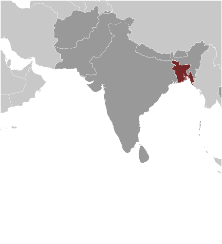
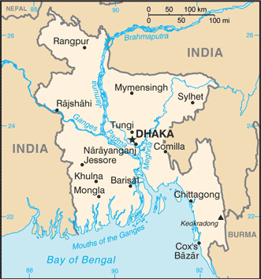
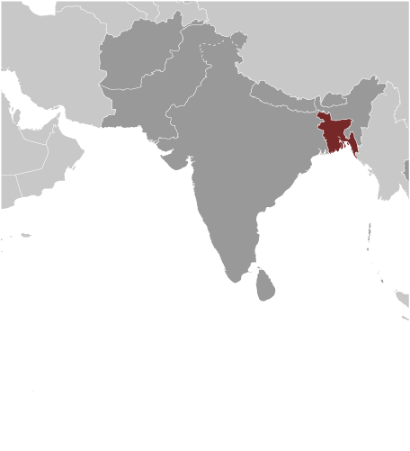
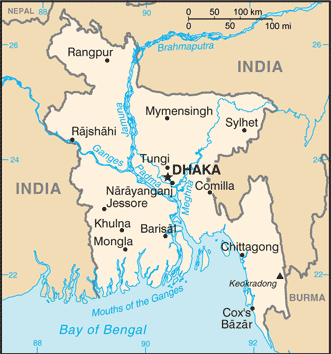

South Asia :: BANGLADESH
Introduction :: BANGLADESH
-
Muslim conversions and settlement in the region now referred to as Bangladesh began in the 10th century, primarily from Arab and Persian traders and preachers. Europeans established trading posts in the area in the 16th century. Eventually the area known as Bengal, primarily Hindu in the western section and mostly Muslim in the eastern half, became part of British India. Partition in 1947 resulted in an eastern wing of Pakistan in the Muslim-majority area, which became East Pakistan. Calls for greater autonomy and animosity between the eastern and western wings of Pakistan led to a Bengali independence movement. That movement, led by the Awami League (AL) and supported by India, won the independence war for Bangladesh in 1971.The post-independence AL government faced daunting challenges and in 1975 was overthrown by the military, triggering a series of military coups that resulted in a military-backed government and subsequent creation of the Bangladesh Nationalist Party (BNP) in 1978. That government also ended in a coup in 1981, followed by military-backed rule until democratic elections occurred in 1991. The BNP and AL alternated in power between 1991 and 2013, with the exception of a military-backed, emergency caretaker regime that suspended parliamentary elections planned for January 2007 in an effort to reform the political system and root out corruption. That government returned the country to fully democratic rule in December 2008 with the election of the AL and Prime Minister Sheikh HASINA. In January 2014, the incumbent AL won the national election by an overwhelming majority after the BNP boycotted, extending HASINA's term as prime minister. With the help of international development assistance, Bangladesh has reduced the poverty rate from over half of the population to less than a third, achieved Millennium Development Goals for maternal and child health, and made great progress in food security since independence. The economy has grown at an annual average of about 6% over the last two decades and the country reached World Bank lower-middle income status in 2015.
Geography :: BANGLADESH
-
Southern Asia, bordering the Bay of Bengal, between Burma and India24 00 N, 90 00 EAsiatotal: 148,460 sq kmland: 130,170 sq kmwater: 18,290 sq kmcountry comparison to the world: 95slightly larger than Pennsylvania and New Jersey combined; slightly smaller than Iowatotal: 4,413 kmborder countries (2): Burma 271 km, India 4,142 km580 kmterritorial sea: 12 nmcontiguous zone: 18 nmexclusive economic zone: 200 nmcontinental shelf: to the outer limits of the continental margintropical; mild winter (October to March); hot, humid summer (March to June); humid, warm rainy monsoon (June to October)mostly flat alluvial plain; hilly in southeastmean elevation: 85 melevation extremes: lowest point: Indian Ocean 0 mhighest point: Keokradong 1,230 mnatural gas, arable land, timber, coalagricultural land: 70.1%arable land 59%; permanent crops 6.5%; permanent pasture 4.6%forest: 11.1%other: 18.8% (2011 est.)53,000 sq km (2012)droughts; cyclones; much of the country routinely inundated during the summer monsoon seasonmany people are landless and forced to live on and cultivate flood-prone land; waterborne diseases prevalent in surface water; water pollution, especially of fishing areas, results from the use of commercial pesticides; ground water contaminated by naturally occurring arsenic; intermittent water shortages because of falling water tables in the northern and central parts of the country; soil degradation and erosion; deforestation; severe overpopulationparty to: Biodiversity, Climate Change, Climate Change-Kyoto Protocol, Desertification, Endangered Species, Environmental Modification, Hazardous Wastes, Law of the Sea, Ozone Layer Protection, Ship Pollution, Wetlandssigned, but not ratified: none of the selected agreementsmost of the country is situated on deltas of large rivers flowing from the Himalayas: the Ganges unites with the Jamuna (main channel of the Brahmaputra) and later joins the Meghna to eventually empty into the Bay of Bengal
People and Society :: BANGLADESH
-
157,826,578 (July 2017 est.)country comparison to the world: 8noun: Bangladeshi(s)adjective: BangladeshiBengali at least 98%, ethnic groups 1.1%note: Bangladesh's government recognizes 27 ethnic groups under the 2010 Cultural Institution for Small Anthropological Groups Act; other sources estimate there are about 75 ethnic groups; critics of the 2011 census claim that it underestimates the size of Bangladesh's ethnic population (2011 est.)Bangla 98.8% (official, also known as Bengali), other 1.2% (2011 est.)Muslim 89.1%, Hindu 10%, other 0.9% (includes Buddhist, Christian) (2013 est.)0-14 years: 27.76% (male 22,283,780/female 21,521,977)15-24 years: 19.36% (male 15,309,543/female 15,241,971)25-54 years: 39.73% (male 30,094,014/female 32,614,286)55-64 years: 6.93% (male 5,405,900/female 5,527,330)65 years and over: 6.23% (male 4,666,033/female 5,161,744) (2017 est.)total dependency ratio: 52.6youth dependency ratio: 44.9elderly dependency ratio: 7.7potential support ratio: 13 (2015 est.)total: 26.7 yearsmale: 26 yearsfemale: 27.3 years (2017 est.)country comparison to the world: 1471.04% (2017 est.)country comparison to the world: 11818.8 births/1,000 population (2017 est.)country comparison to the world: 895.4 deaths/1,000 population (2017 est.)country comparison to the world: 178-3.1 migrant(s)/1,000 population (2017 est.)country comparison to the world: 175urban population: 35.8% of total population (2017)rate of urbanization: 3.19% annual rate of change (2015-20 est.)DHAKA (capital) 17.598 million; Chittagong 4.539 million; Khulna 1.022 million; Rajshahi 844,000 (2015)at birth: 1.04 male(s)/female0-14 years: 1.04 male(s)/female15-24 years: 1 male(s)/female25-54 years: 0.93 male(s)/female55-64 years: 0.98 male(s)/female65 years and over: 0.97 male(s)/femaletotal population: 0.97 male(s)/female (2016 est.)18.5 yearsnote: median age at first birth among women 25-29 (2014 est.)176 deaths/100,000 live births (2015 est.)country comparison to the world: 55total: 31.7 deaths/1,000 live birthsmale: 34 deaths/1,000 live birthsfemale: 29.2 deaths/1,000 live births (2017 est.)country comparison to the world: 61total population: 73.4 yearsmale: 71.3 yearsfemale: 75.6 years (2017 est.)country comparison to the world: 1362.17 children born/woman (2017 est.)country comparison to the world: 10062.3% (2014)2.8% of GDP (2014)country comparison to the world: 1830.39 physicians/1,000 population (2012)0.6 beds/1,000 population (2011)improved:urban: 86.5% of populationrural: 87% of populationtotal: 86.9% of populationunimproved:urban: 13.5% of populationrural: 13% of populationtotal: 13.1% of population (2015 est.)improved:urban: 57.7% of populationrural: 62.1% of populationtotal: 60.6% of populationunimproved:urban: 42.3% of populationrural: 37.9% of populationtotal: 39.4% of population (2015 est.)<.01% (2016 est.)12,000 (2016 est.)country comparison to the world: 871,000 (2016 est.)country comparison to the world: 63degree of risk: highfood or waterborne diseases: bacterial and protozoal diarrhea, hepatitis A and E, and typhoid fevervectorborne diseases: dengue fever and malaria are high risks in some locationswater contact disease: leptospirosisanimal contact disease: rabies (2016)3.6% (2016)country comparison to the world: 19132.6% (2014)country comparison to the world: 52.2% of GDP (2015)country comparison to the world: 161definition: age 15 and over can read and writetotal population: 72.8%male: 75.6%female: 69.9% (2016 est.)total: 10 yearsmale: 10 yearsfemale: 10 years (2011)total: 9.4%male: 9.5%female: 9.4% (2013 est.)country comparison to the world: 105
Government :: BANGLADESH
-
conventional long form: People's Republic of Bangladeshconventional short form: Bangladeshlocal long form: Gana Prajatantri Bangladeshlocal short form: Bangladeshformer: East Bengal, East Pakistanetymology: the name - a compound of the Bengali words "Bangla" (Bengal) and "desh" (country) - means "Country of Bengal"parliamentary republicname: Dhakageographic coordinates: 23 43 N, 90 24 Etime difference: UTC+6 (11 hours ahead of Washington, DC, during Standard Time)8 divisions; Barisal, Chittagong, Dhaka, Khulna, Mymensingh, Rajshahi, Rangpur, Sylhet16 December 1971 (from West Pakistan)Independence Day, 26 March (1971); Victory Day, 16 December (1971); note - 26 March 1971 is the date of the Awami League's declaration of an independent Bangladesh, and 16 December (Victory Day) memorializes the military victory over Pakistan and the official creation of the state of Bangladeshhistory: previous 1935, 1956, 1962 (pre-independence); latest enacted 4 November 1972, effective 16 December 1972, suspended March 1982, restored November 1986amendments: proposed by the House of the Nation; approval requires at least a two-thirds majority vote by the House membership, assented to by the president of the republic, and approved in a referendum by a majority of voters; amended many times, last in 2014 (2017)mixed legal system of mostly English common law and Islamic lawhas not submitted an ICJ jurisdiction declaration; accepts ICCt jurisdictioncitizenship by birth: nocitizenship by descent only: at least one parent must be a citizen of Bangladeshdual citizenship recognized: yes, but limited to select countriesresidency requirement for naturalization: 5 years18 years of age; universalchief of state: President Abdul HAMID (since 24 April 2013); note - Abdul HAMID served as acting president following the death of Zillur RAHMAN in March 2013; HAMID was subsequently indirectly elected by the National Parliament and sworn in 24 April 2013head of government: Prime Minister Sheikh HASINA (since 6 January 2009)cabinet: Cabinet selected by the prime minister, appointed by the presidentelections/appointments: president indirectly elected by the National Parliament for a 5-year term (eligible for a second term); election last held on 22 April 2013 (next to be held by 2018); the president appoints as prime minister the majority party leader in the National Parliamentelection results: President Abdul HAMID (AL) elected by the National Parliament unopposed; Sheikh HASINA reappointed prime minister as leader of the majority AL partydescription: unicameral House of the Nation or Jatiya Sangsad (350 seats; 300 members in single-seat territorial constituencies directly elected by simple majority popular vote; 50 members - reserved for women only - indirectly elected by the elected members by proportional representation vote using the single transferable vote method; all members serve 5-year terms)elections: last held on 5 January 2014 (next to be held by January 2019); note - the 5 January 2014 poll was marred by widespread violence, boycotts, general strikes, and low voter turnoutelection results: percent of vote by party - AL 79.1%, JP (Ershad) 11.3%, WP 2.1%, JSD 1.8%, other 1%, independent 4.8%; seats by party - AL 234, JP 34, WP 6, JSD 5, other 5, independent 15; 1 seat repolledhighest court(s): Supreme Court of Bangladesh (organized into the Appellate Division with 7 justices and the High Court Division with 99 justices)judge selection and term of office: chief justice and justices appointed by the president; justices serve until retirement at age 67subordinate courts: subordinate courts: civil courts include: Assistant Judge's Court; Joint District Judge's Court; Additional District Judge's Court; District Judge's Court; criminal courts include: Court of Sessions; Court of Metropolitan Sessions; Metropolitan Magistrate Courts; Magistrate Court; special courts/tribunalsAwami League or AL [Sheikh HASINA]Bangladesh Nationalist Front or BNF [Abdul Kalam AZADI]Bangladesh Nationalist Party or BNP [Khaleda ZIA]Bangladesh Tariqat Federation or BTF [Syed Nozibul Bashar MAIZBHANDARI]Jatiya Party or JP (Ershad faction) [Hussain Mohammad ERSHAD]Jatiya Party or JP (Manju faction) [Anwar Hossain MANJU]Liberal Democratic Party or LDP [Oli AHMED]National Socialist Party or JSD [KHALEQUZZAMAN]Workers Party or WP [Rashed Khan MENON]Ain o Salish Kendro (Centre for Law and Mediation) or ASK (legal aid and civil rights)Bangladesh Center for Worker Solidarity or BCWSBangladesh Rural Advancement Committee or BRAC [Sir Fasel Hasan ABED]Federation of Bangladesh Chambers of Commerce and Industry or FBCCI [Md. Shafiul Islam (Mohiuddin)]Ministry of Women's and Children's Affairs or MoWCA [Meher Afroze CHUMKI] (advocacy group to end gender-based violence)Odikhar [Dr. C.R. ABRAR (human rights group)other: associations of madrassa teachers; business associations, including those intended to promote international trade; development and advocacy NGOs associated with the Grameen Bank; environmentalists; Islamist groups; labor rights advocacy groups; NGOs focused on poverty alleviation, and international trade; religious leaders; tribal groups and advocacy organizations; union leadersADB, ARF, BIMSTEC, C, CD, CICA (observer), CP, D-8, FAO, G-77, IAEA, IBRD, ICAO, ICC (national committees), ICRM, IDA, IDB, IFAD, IFC, IFRCS, IHO, ILO, IMF, IMO, IMSO, Interpol, IOC, IOM, IPU, ISO, ITSO, ITU, ITUC (NGOs), MIGA, MINURSO, MINUSMA, MONUSCO, NAM, OIC, OPCW, PCA, SAARC, SACEP, UN, UNAMID, UNCTAD, UNESCO, UNHCR, UNIDO, UNIFIL, UNMIL, UNMISS, UNOCI, UNWTO, UPU, WCO, WFTU (NGOs), WHO, WIPO, WMO, WTOchief of mission: Ambassador Mohammad ZIAUDDIN (since 18 September 2014)chancery: 3510 International Drive NW, Washington, DC 20008telephone: [1] (202) 244-0183FAX: [1] (202) 244-2771consulate(s) general: Los Angeles, New Yorkchief of mission: Ambassador Marcia BERNICAT (since 4 February 2015)embassy: Madani Avenue, Baridhara, Dhaka 1212mailing address: G. P. O. Box 323, Dhaka 1000telephone: [880] (2) 5566-2000FAX: [880] (2) 5566-2915green field with a large red disk shifted slightly to the hoist side of center; the red disk represents the rising sun and the sacrifice to achieve independence; the green field symbolizes the lush vegetation of BangladeshBengal tiger, water lily; national colors: green, redname: "Amar Shonar Bangla" (My Golden Bengal)lyrics/music: Rabindranath TAGOREnote: adopted 1971; Rabindranath TAGORE, a Nobel laureate, also wrote India's national anthem
Economy :: BANGLADESH
-
Bangladesh's economy has grown roughly 6% per year since 1996 despite prolonged periods of political instability, poor infrastructure, endemic corruption, insufficient power supplies, and slow implementation of economic reforms. Although more than half of GDP is generated through the services sector, almost half of Bangladeshis are employed in the agriculture sector, with rice as the single-most-important product.Garment exports, the backbone of Bangladesh's industrial sector, accounted for more than 80% of total exports and surpassed $25 billion in 2016. The sector continues to grow, despite a series of high-profile factory accidents that have killed more than 1,000 workers and crippling strikes, including a nationwide transportation blockade orchestrated by the political opposition during the first several months of 2015. Steady export growth in the garment sector combined with remittances from overseas Bangladeshis - which totaled about $15 billion and 8% of GDP in 2015 - are key contributors to Bangladesh's sustained economic growth and rising foreign exchange reserves.$629.7 billion (2016 est.)$580.1 billion (2015 est.)$537.3 billion (2014 est.)note: data are in 2016 dollarscountry comparison to the world: 35$228.4 billion (2016 est.)7.2% (2016 est.)6.8% (2015 est.)6.3% (2014 est.)country comparison to the world: 9$3,900 (2016 est.)$3,700 (2015 est.)$3,500 (2014 est.)note: data are in 2016 dollarscountry comparison to the world: 17830.9% of GDP (2016 est.)30.3% of GDP (2015 est.)29.1% of GDP (2014 est.)country comparison to the world: 25household consumption: 69.1%government consumption: 5.9%investment in fixed capital: 29.7%investment in inventories: 3%exports of goods and services: 16.7%imports of goods and services: -21.3% (2016 est.)agriculture: 14.8%industry: 28.8%services: 56.5% (2016 est.)rice, jute, tea, wheat, sugarcane, potatoes, tobacco, pulses, oilseeds, spices, fruit; beef, milk, poultryjute, cotton, garments, paper, leather, fertilizer, iron and steel, cement, petroleum products, tobacco, pharmaceuticals, ceramics, tea, salt, sugar, edible oils, soap and detergent, fabricated metal products, electricity, natural gas11.1% (2016 est.)country comparison to the world: 872.05 millionnote: extensive migration of labor to Saudi Arabia, Kuwait, UAE, Oman, Qatar, and Malaysia (2016 est.)country comparison to the world: 8agriculture: 47%industry: 13%services: 40% (2010 est.)4.1% (2016 est.)4.1% (2015 est.)note: about 40% of the population is underemployed; many persons counted as employed work only a few hours a week and at low wagescountry comparison to the world: 5331.5% (2010 est.)lowest 10%: 4%highest 10%: 27% (2010 est.)32.1 (2010)33.6 (1996)country comparison to the world: 113revenues: $22.61 billionexpenditures: $33.72 billion (2016 est.)9.9% of GDP (2016 est.)country comparison to the world: 213-4.9% of GDP (2016 est.)country comparison to the world: 15626.9% of GDP (2016 est.)26.7% of GDP (2015 est.)country comparison to the world: 1691 July - 30 June5.7% (2016 est.)6.2% (2015 est.)country comparison to the world: 1785% (30 October 2016)5% (30 October 2015)country comparison to the world: 8010.41% (31 December 2016 est.)11.71% (31 December 2015 est.)country comparison to the world: 79$25.94 billion (31 December 2016 est.)$21.44 billion (31 December 2015 est.)country comparison to the world: 63$121.1 billion (31 December 2016 est.)$106.8 billion (31 December 2015 est.)country comparison to the world: 54$133.3 billion (31 December 2016 est.)$115.3 billion (31 December 2015 est.)country comparison to the world: 51$50.98 billion (31 December 2015 est.)$41.73 billion (31 December 2014 est.)$23.55 billion (31 December 2011 est.)country comparison to the world: 52$1.381 billion (2016 est.)$2.58 billion (2015 est.)country comparison to the world: 39$34.14 billion (2016 est.)$31.74 billion (2015 est.)country comparison to the world: 54garments, knitwear, agricultural products, frozen food (fish and seafood), jute and jute goods, leatherUS 13.1%, Germany 12.7%, UK 8.6%, France 5.1%, Spain 5% (2016)$40.37 billion (2016 est.)$37.86 billion (2015 est.)country comparison to the world: 55cotton, machinery and equipment, chemicals, iron and steel, foodstuffsChina 24.3%, India 13.4%, Singapore 5.1%, Japan 4.5% (2016)$32.28 billion (31 December 2016 est.)$27.49 billion (31 December 2015 est.)country comparison to the world: 47$41.85 billion (31 December 2016 est.)$38.64 billion (31 December 2015 est.)country comparison to the world: 69$13.24 billion (31 December 2016 est.)$12.91 billion (31 December 2015 est.)country comparison to the world: 91$228.5 million (31 December 2016 est.)$188 million (31 December 2015 est.)country comparison to the world: 97taka (BDT) per US dollar -78.468 (2016 est.)78.468 (2015 est.)77.947 (2014 est.)77.614 (2013 est.)81.86 (2012 est.)
Energy :: BANGLADESH
-
population without electricity: 60,300,000electrification - total population: 60%electrification - urban areas: 90%electrification - rural areas: 49% (2013)55.5 billion kWh (2015 est.)country comparison to the world: 5148.98 billion kWh (2015 est.)country comparison to the world: 500 kWh (2016 est.)country comparison to the world: 1070 kWh (2016 est.)country comparison to the world: 12511.7 million kW (2015 est.)country comparison to the world: 5796.6% of total installed capacity (2015 est.)country comparison to the world: 440% of total installed capacity (2015 est.)country comparison to the world: 502% of total installed capacity (2015 est.)country comparison to the world: 1371.6% of total installed capacity (2015 est.)country comparison to the world: 1294,000 bbl/day (2016 est.)country comparison to the world: 83313 bbl/day (2014 est.)country comparison to the world: 7826,160 bbl/day (2014 est.)country comparison to the world: 6228 million bbl (1 January 2017 es)country comparison to the world: 8425,720 bbl/day (2014 est.)country comparison to the world: 89107,000 bbl/day (2015 est.)country comparison to the world: 791,802 bbl/day (2014 est.)country comparison to the world: 10685,990 bbl/day (2014 est.)country comparison to the world: 6226.86 billion cu m (2015 est.)country comparison to the world: 2839.88 billion cu m (2015 est.)country comparison to the world: 310 cu m (2013 est.)country comparison to the world: 690 cu m (2013 est.)country comparison to the world: 92205.4 billion cu m (1 January 2017 es)country comparison to the world: 4566 million Mt (2013 est.)country comparison to the world: 53
Communications :: BANGLADESH
-
total subscriptions: 772,369subscriptions per 100 inhabitants: less than 1 (July 2016 est.)country comparison to the world: 74total: 126,391,269subscriptions per 100 inhabitants: 81 (July 2016 est.)country comparison to the world: 12general assessment: inadequate for a modern country; introducing digital systems; trunk systems include VHF and UHF microwave radio relay links, and some fiber-optic cable in citiesdomestic: fixed-line teledensity remains less than 1 per 100 persons; mobile-cellular telephone subscribership has been increasing rapidly and now exceeds 80 telephones per 100 personsinternational: country code - 880; landing point for the SEA-ME-WE-4 fiber-optic submarine cable system that provides links to Europe, the Middle East, and Asia; satellite earth stations - 6; international radiotelephone communications and landline service to neighboring countries (2016)state-owned Bangladesh Television (BTV) operates 1 terrestrial TV station, 3 radio networks, and about 10 local stations; 8 private satellite TV stations and 3 private radio stations also broadcasting; foreign satellite TV stations are gaining audience share in the large cities; several international radio broadcasters are available (2009).bdtotal: 28,499,324percent of population: 18.2% (July 2016 est.)country comparison to the world: 42
Transportation :: BANGLADESH
-
number of registered air carriers: 6inventory of registered aircraft operated by air carriers: 30annual passenger traffic on registered air carriers: 2,906,799annual freight traffic on registered air carriers: 182,692,553 mt-km (2015)S2 (2016)18 (2013)country comparison to the world: 139total: 16over 3,047 m: 22,438 to 3,047 m: 21,524 to 2,437 m: 6914 to 1,523 m: 1under 914 m: 5 (2017)total: 21,524 to 2,437 m: 1under 914 m: 1 (2013)3 (2013)gas 2,950 km (2013)total: 2,460 kmbroad gauge: 659 km 1.676-m gaugenarrow gauge: 1,801 km 1.000-m gauge (2014)country comparison to the world: 66total: 21,269 kmpaved: 2,021 kmunpaved: 19,248 km (2010)country comparison to the world: 1068,370 km (includes up to 3,060 km of main cargo routes; network reduced to 5,200 km in the dry season) (2011)country comparison to the world: 16total: 62by type: bulk carrier 25, cargo 28, chemical tanker 1, container 5, petroleum tanker 3foreign-owned: 8 (China 1, Singapore 7)registered in other countries: 10 (Comoros 1, Hong Kong 1, Panama 5, Saint Vincent and the Grenadines 1, Sierra Leone 1, Singapore 1) (2010)country comparison to the world: 65major seaport(s): Chittagongriver port(s): Mongla Port (Sela River)container port(s): Chittagong (1,392,104) (2011)
Military and Security :: BANGLADESH
-
1.44% of GDP (2016)1.46% of GDP (2015)1.36% of GDP (2014)1.33% of GDP (2013)1.41% of GDP (2012)country comparison to the world: 86Bangladesh Defense Force: Bangladesh Army (Sena Bahini), Bangladesh Navy (Noh Bahini, BN), Bangladesh Air Force (Biman Bahini, BAF) (2013)16-19 years of age for voluntary military service; Bangladeshi birth and 10th grade education required; initial obligation 15 years (2012)the International Maritime Bureau reports the territorial waters of Bangladesh remain a risk for armed robbery against ships; in 2016, the number of attacks against commercial vessels decreased to three over 11 such incidents in 2015
Transnational Issues :: BANGLADESH
-
Bangladesh referred its maritime boundary claims with Burma and India to the International Tribunal on the Law of the Sea; Indian Prime Minister Singh's September 2011 visit to Bangladesh resulted in the signing of a Protocol to the 1974 Land Boundary Agreement between India and Bangladesh, which had called for the settlement of longstanding boundary disputes over undemarcated areas and the exchange of territorial enclaves, but which had never been implemented; Bangladesh struggles to accommodate 32,000 Rohingya, Burmese Muslim minority from Arakan State, living as refugees in Cox's Bazar; Burmese border authorities are constructing a 200 km (124 mi) wire fence designed to deter illegal cross-border transit and tensions from the military build-up along borderrefugees (country of origin): 891,200 (Burma) (2017) (includes an estimated 615,000 Rohingya refugees who have fled conflict since 25 August 2017)IDPs: 426,000 (conflict, development, human rights violations, religious persecution, natural disasters) (2016)transit country for illegal drugs produced in neighboring countries